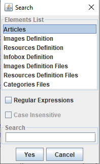
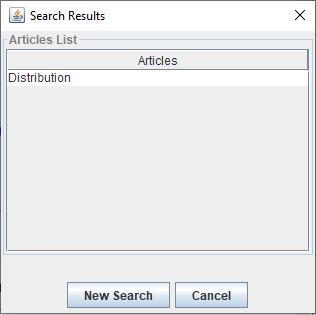

Home
Categories
Dictionary
Download
Project Details
Changes Log
What Links Here
How To
Syntax
FAQ
License
Editor search
1 Content of the Search window
1.1 Type of elements
1.2 Search configuration
1.3 Text for the search
2 Result window
3 Notes
4 See also
1.1 Type of elements
1.2 Search configuration
1.3 Text for the search
2 Result window
3 Notes
4 See also

The toolbar on top of the window allow to manage the content of the wiki and navigate in the wiki content. The
 button allows to search for elements in the wiki.
button allows to search for elements in the wiki.
Content of the Search window
After clicking on the
button, the following window will appear:
- The top of the window allows to specify the type of the element to search for
- The middle of the window allows to configure the search
- The bottom of the window specifies the text for the search
Type of elements
You can search for:- Articles
- Images definition
- Resources definition
- Infobox definitions
- Images definition files
- Resources definition files
- Categories files
Search configuration
By default:- Search for elements different from articles is not case-sentitive
- Search does not use a regular expressions: Searching for "Any" characters is specified by using a "*" (start") in the search term
Text for the search
The text for the Search specifies which name to search for.Result window
After clicking on "Yes", the result window presents a list of the elements which have been found:
Selecting a result will select this element in the Editor tree[1]
Here it is the result after searching for the term "distrib*"
.Notes
- ^ Here it is the result after searching for the term "distrib*"
See also
- DocGenerator editor: This article explains the DocGenerator editor
- Editor window: This article explains the content of the Editor window
×

Categories: Editor | Gui